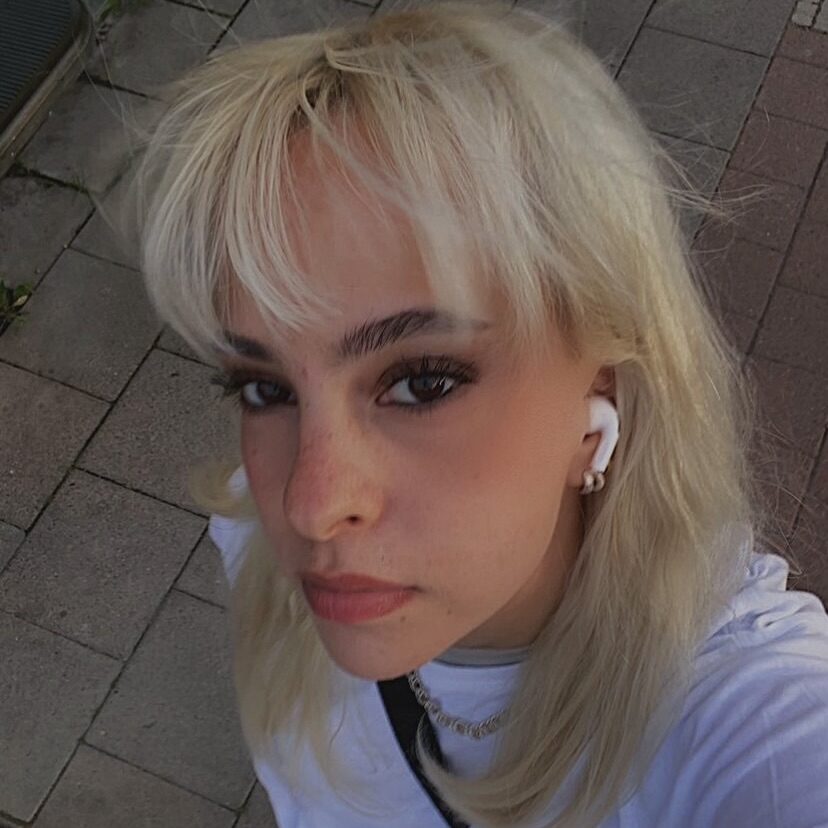

Welcome to my first website
Portrait
This is my first website where you get the chance to get to know me. My
name is Alma Sikiric. I am 21 years old. Currently, I am studying
Graphic Design and web development. I'm intrigued by everything I have
learnt so far and continue to learn everyday. From logos and branding,
to programming so on and so forth. My interests to graphic design begun
as clothing. I really enjoy styling clothes and learning about what fits
well together for instance: color-combinations, textures, sizing etc.